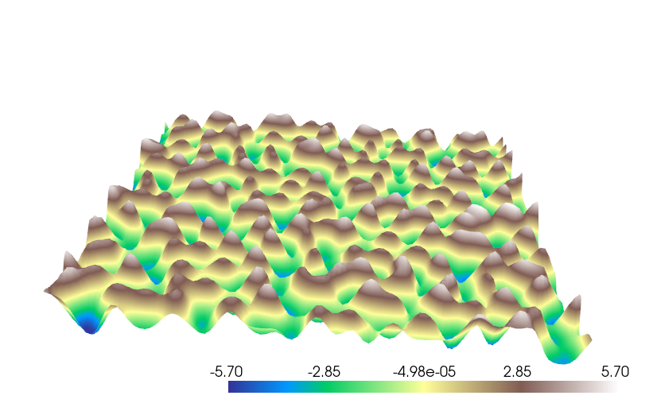

Team 49: Procedural Terrain Generation with Style Transfer
Final Project
By Daniel Hodde, Gurvir Kooner, Richard Yang, Trustin Nguyen
Link to webpage: https://hodde.dev/final-report
Link to Video: View Final Video
Abstract
In our project we create a procedural terrain generation system that leverages an interactive GUI allowing experimentation and customization. To create realistic 3D terrains different noise algorithms like Perlin, Simplex, Ridge, and Billow are combined with domain wrapping, erosion simulation, and neural style transfer. Using PyQt6 we created a user interface to allow for parameter adjustment and visualization using PyVista. Using TensorFlow's VGG19 model we were able to transfer real-world terrains into those procedurally generated. Ultimately, this project combines traditional procedural generation techniques to modern approaches leveraging machine learning to create realistic landscapes.Technical Approach
For the base noise functions, we implemented Perlin, Simplex, Ridge, and Bellow noise. The techniques we used in all of them included sampling, interpolation, and hashing coordinates. In perlin noise, we computed the 4 nearest neighbors to a given sample on a uniform grid, each of which would contribute a gradient vector to the sample's value. Because we have 4 points, we interpolate the values along the x-axis and y-axis, a bilinear interpolation to get the height at that point. Simplex noise is very similar but rather than using the 4 nearest neighbors, we used the 3 nearest neighbors according to a simplex grid. A technical challenge in the algorithm involved skewing from a simplex grid to a rectangular grid and vice versa. And we did this by looking into the skew transformation and computing lengths through the geometry of the grid (not detailed in the source we used). In both algorithms, hashing is used to randomly assign a gradient vector to a grid coordinate. Perlin and simplex noise are often used to generate new forms of noise such as ridge and bellow noise. Noise generated from the perlin/simplex algorithm follows a smooth wave, so taking the absolute value of this noise gives bumps which we then invert to get sharp ridges (Ridge noise). A softer variant involves just taking the absolute value of the noise and exponentiating it. Since the bumps are valued between 0 and 1, a higher exponent levels the terrain (Bellow noise).To achieve more detail in our terrain, we used fractal brownian motion to add layers of noise from coarse to fine. In each iteration, we defined a falloff value while scaling up the resolution of the sampling.
Most of the noise generated from the base noise functions contain artifacts such as abrupt corners that follow a grid pattern. Something that adds more variation to the terrain would be to use a non-uniform grid of samples rather than a uniform one. So for domain warping, we took a uniform grid and added random noise in the x and y directions of each sample to modify the domain. Then we had our noise functions sample from this domain to produce wavy patterns.
After generating and applying style to a heightmap, the terrain often appears mountainous and sharp. To alleviate this, we use erosion to smooth out the surface. The magnitude of the gradient of the terrain at a point represents how steep that surface is. Then to make steeper surfaces more level, we divide the height of the terrain by that magnitude. In our implementation, we simulated erosion iteratively using fractal brownian motion to avoid abrupt changes to the terrain height and allow for fine-grained adjustments.
For neural style transfer we would use real-world height maps and the procedural noise images as content to apply the characteristics of real-world to our procedurally generated terrains. We used TensorFlow and the VGG19 model with custom loss functions. We used content weight for our content loss to preserve the procedural noise image used, a style weight for style loss loss to transfer the real-world characteristics, and a total variation weight for the total variation loss to preserve spatial continuity.
Our reference required an already generated noise image and a real-world style to transfer and had fixed parameters for the loss functions. We utilized a NASA database from the Shuttle Radar Topography Mission to get real-world height maps. This database allows us to search for height maps of any location on the globe, and thus allows us to quickly emulate terrain from a desired real world location. However, to boost the interactivity we created an interactive setup that allowed you to tune the weights for our loss function and generate different kinds of procedural noise on the fly before selecting the real-world style you wanted to apply.
Problems Encountered
- Our original code for noise generation and terrain plotting expected values between -1 and 1. However, the neural style transfer code expected it from 0 to 1. This wasn't immediately apparent and would lead to the program crashing. However, once we identified this issue we were able to properly integrate neural style transfer into our terrain generation pipeline.
- Furthermore, for neural style transfer optimization was necessary. Luckily, tensorflow had built-in GPU support so by taking the time to use tensorflow-metal on MacOS we were able to significantly boost performance compared to just using the CPU. We also incorporated a worker thread style to prevent the UI from freezing as the style transfer was happening.
- We also ran into issues when implementing tree generation. Initially when we tried to place the trees on the terrain, instead of placing the trees on top of the terrain, the trees would be added to the underlying geometry of the mountains, and warp the terrain in the shape of the trees. To fix this we had to add the trees as a separate mesh element on top of the terrain.
Lessons Learned
During our project we learned how different traditional procedural generation methods can be used to create realistic terrains. Incorporating different methods like erosion simulation and fractal noise can significantly change how realistic terrains look. However, we also learned that combining these traditional approaches with machine learning can be used to make even more compelling results than using traditional methods alone.Results
The following redsults show the terrain generated using the various methods we implemented for terrain generation:|
|
|
|

|
|
|
|
|
|
|

|
In addition to the noise functions we also implemented neural style transfer which allows us to transfer the style of a real-world terrain to our procedurally generated terrain. The results are shown below:
|
|
|
|
Our platform also allows for interactivity with a simple animation of the terrain, the ability to zoom and pan around the terrain, and the ability to edit parameters in real-time as seen below:
|
|

|
References
Ridge & ErosionSimplex
Domain warping
Neural style transfer * NOTE: this paper was used as inspiration for the project and although it includes a repo we did not utilize the repo as a starting point for our implementation. We implemented our own version that allows us experiment with different methods that allow for more control over the style transfer process and were not included in the original paper.
Nasa shuttle radar topography mission
Contrubutions
- Gurvir Kooner: For the technical portion Gurvir assisted with the initial perlin and fractal noise functions, implemented neural style transfer and modified to use custom noise functions as content input, and integrated the neural style transfer into the interactive GUI. Beyond the technical contributions, he was a key contributor to the reports and planning process for the project.
- Daniel Hodde: Developed the perlin noise and fractal perlin noise generation, implemented the noise based tree generation, basic visualizations in PyVista and assisted with neural style transfer. In addition he found the initial paper that this project was inspired by and contributed to reports and planning.
- Trustin Nguyen: Wrote simplex, ridge, and bellow noise. Added erosion, domain warping. Wrote code for GUI. Contributed to reports and planning.
- Richard Yang: Richard researched effective resources and libraries to help visualize noise and height maps in Python, settling on PyVista for visualizing 3D terrain with support for panning around the view and adding outside objects such as trees. He also experimented with creating 3D terrain-following meshes given a topographic surface and assisted with planning and writeups.